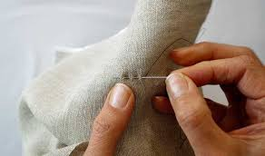

|
Home | Sewing | Embroidery | Knitting | Gallery |
Although I learned my first hand stitches in Girl
Scouts around the age of 8, I don't consider that to be the time I first began sewing. During my first
year of high school, though, I was taught how to use a sewing machine for the first time and how to do
basic alterations and repairs to clothing in a theatrical setting. From there, I learned how to construct
garments from scratch while following a sewing pattern, often one that is poorly written or outdated.
Now, in my free time, I often construct my own
garments for personal use, either with a purchased sewing pattern or without any instruction. While
this is not any cheaper than purchasing new clothing outright (In fact, it is often more expensive
because of the higher-quality materials and methods.), I still enjoy having a productive passtime that
allows me to physically hold the finished product
| The sewing community is a very diverse group,
so there are bound to be arguments within the community about certain things. These arguments
include various opinions about machine vs. hand sewing, synthetic vs. natural dyes and fabrics,
the validity of online PDF patterns, and much more. Generally, I believe that people need to mind their own business. If one seamstress prefers to use high-quality, natural fabrics and exclusively sews on a machine, they should be allowed to continue that without judging or being judged by another seamstress who can only afford to buy cheaply-made fabrics and hand sewing materials. Sewing can be a very expensive hobby or a very cheap hobby, and people shouldn't be judged for whichever way they decide to take things. I have especially strong opinions about online PDF patterns, though. I think they're great; they are very affordable (generally costing less than $10 upfront) and easy to access. There are also a lot more options with PDF patterns than standard commercial patterns because anyone can produce them. This does, however, occasionally affect the quality of the pattern which is why reading reviews and looking at example images carefully is very important. |
 |